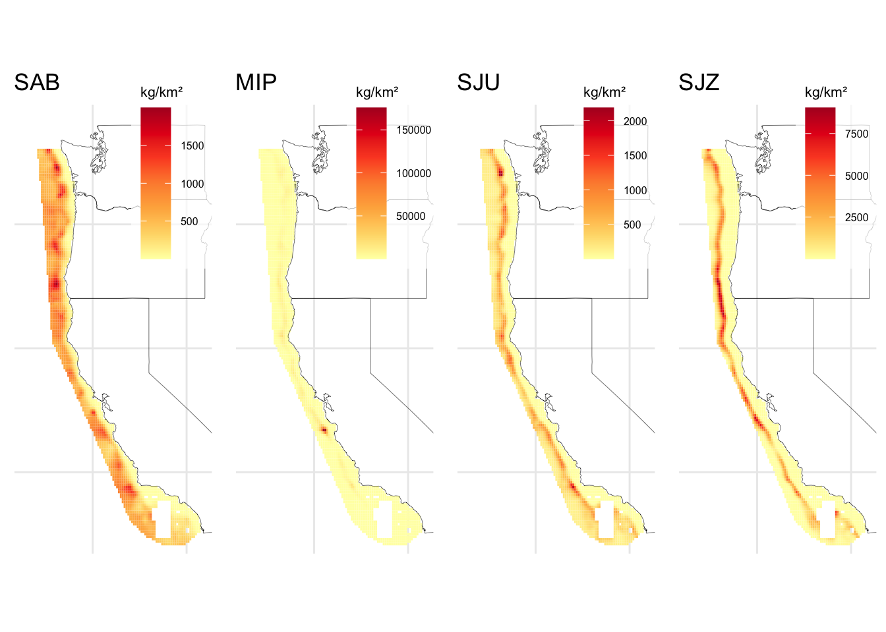

| Parameter | Value |
|---|---|
| Length-at-age min (female) | 25.262 |
| Length-at-age max (female) | 61.130 |
| von Bertalanffy K (female) | 0.367 |
| Length-at-age min (male) | 26.621 |
| Length-at-age max (male) | 56.111 |
| von Bertalanffy K (male) | 0.381 |
1 Populations data
1.1 Populations
This section includes a description of the raw input datasets and the parameters considered to run the R routines for the target species population characteristics. These files should be stored and loaded from DISPLACE_raw_inputs/{project-name}/POPULATIONS.
Commercial species included in this study:
- Sablefish (Anoplopoma fimbria) (FAO code SAB): Status along the U.S. West Coast in 2023.
- Dover Sole (Microstomus pacificus) (FAO code MIP): Stock assessment along the U.S. West Coast in 2021.
- Longspine Thornyhead (Sebastolobus altivelis) (FAO code SJZ): Biological data from stock assessments in California, Oregon, and Washington in 2013.
- Shortspine Thornyhead (Sebastolobus alascanus) (FAO code SJU): Status along the U.S. West Coast in 2023.
We are focusing on these species because, aside from albacore—which we can’t model due to the fishery’s range—they are the most common in the lease areas. While swordfish is also common, its fishery is about to close, so we did not include it. These species also represent the highest landings by weight and value (though sablefish prices have recently dropped). Although crab and squid have the highest overall landings, they are primarily caught nearshore and are therefore not impacted by the leases. The fisheries of this species is also known ans DTS (Deepwater Trawl complex Species).
1.2 Stock biological traits
This section describes the contents of the file Stock_biological_traits.csv. Most of the data is extracted from the stock assessments approved by the Pacific Fishery Management Council during the September 2023 Council Meeting.
Besides specific parameter values for each species, detailed in the subsequent sections, the following variables are also included in Stock_biological_traits.csv:
UseIt: values Yes/No, indicating whether it is included in the analysis or not.stock: code of the population. For our study case this corresponds to the FAO code.species: Species scientific name.Source_BiologyandSource_Stock: references from where the values are taken.
Stock_biological_traits.csv also contains details on the input size bins in DISPLACE, as defined in Stock_abundances_at_szgroup.csv.Using the maximum length values across all DTS species, we set a sz_bin_cm of 6 (in cm) based on the unit_sizebin, where a value of 1 is used. For more details, refer to the section on abundance by size.
1.2.1 Sablefish
(Anoplopoma fimbria) (FAO code SAB)
Note: For cases with sexual dimorphism, the average value across both females and males is used.
1.2.1.1 Somatic growth
Linf: Asymptotic length. Sablefish stock assessments assumes Schnute growth rather than von Bertalanffy growth. Since DISPLACE does not incorporate Schnute, we will derive Bertalanffy parameters from those in Schnute.The von Bertalanffy growth function is given by the folowwing expression:
\[ L(t)=L_∞(1−e^{−K(t−t_0)}) \]
The four-parameter growth function from Schnute can be defined as:\[ L(t) = L_1 + \left( L_2 - L_1 \right) \frac{1 - e^{-K(t - t_1)}}{1 - e^{-K(t_2 - t_1)}} \]
We can get \(L_2\) from Length-at-age max (female) is 61.130 and (male) 56.111, and \(L_1\) from Length-at-age max (female) is 25.262 and (male) 26.621 in page 27, table 2 (Johnson, Wetzel, and Tolimieri (2023)). Further, \(K\) corresponds to 0.367 \(yr^{-1}\) for females and 0.381 \(yr^{-1}\) for males from page 10 and from von Bertalanffy K variables in page 27, table 2 (Johnson, Wetzel, and Tolimieri (2023)) (Table 1.1). Regarding \(t_1\) and \(t_2\), these can be found on the benchmark assessment M. A. Haltuch et al. (2019), section 3.3, page 54, on general model specifications, corresponding to 0.5 and 30 years respectively.
If we derive LInf from Schnute we get:
\[ L_{\infty} = \frac{L_2 - L_1 \cdot e^{-K(t_2 - t_1)}}{1 - e^{-K(t_2 - t_1)}} \]
Based on the parameters available in the assessment, we will calculate Linf independently for males and females. The average value across both will be inputted into DISPLACE and corresponds to 58.6210501.
Alternatively, if the values from the stock assessment could not be derived, we could have considered using the value of 63.67 cm from Table 6 in M. A. Head, Keller, and Bradburn (2014) publication. However, we are including these here merely as a reference.
CV_Linf: We only have Schnute parameters available. In this case, we will use the average of theGrowth CV oldvalues, as they are the closest toLinfand can serve as a proxy. These correspond toGrowth CV old (female)(0.103) and(male)(0.078) in page 27, table 2 (Johnson, Wetzel, and Tolimieri (2023)). Mean value used 0.0905.K: Von Bertalanffy \(K\). 0.367 \(yr^{-1}\) for females and 0.381 \(yr^{-1}\) for males from page 10 and fromvon Bertalanffy Kvariables in page 27, table 2 (Johnson, Wetzel, and Tolimieri (2023)). Mean value used 0.374 \(yr^{-1}\).t0: Theoretical age of the von Bertalanffy growth function (VBGF) at which fish would have a size of zero. Again, we need to consider that the stock assessment express growth using Schnute parameters. Thus we’ll need to derive \(t_0\) from:
\[ t_0 = t_1 + \frac{1}{K} \ln \left( \frac{L_2 - L_1}{L_2 - L_1 \cdot e^{-K(t_2 - t_1)}} \right) \]
This yields a t0 of -1.1883843, which we will use. For reference, Table 7 from M. A. Head, Keller, and Bradburn (2014) provides an overall estimate of -1.28 years. TO DISCUSS
CV_recru: Coefficient of variation in recruitment. Table 2, on page 27 from the stock assessment, includes all model parameters. Among others, it defines recruitment variability (\(\sigma R\)), which corresponds to the standard deviation of the log-scale recruitment deviations (Johnson, Wetzel, and Tolimieri (2023)). Then the coefficient of variation (CV) of recruitment can be estimated from this parameter as follows:
\[ CV = \sqrt{ \exp(\sigma R^2) - 1 } \]
Thus, for \(\sigma R = 1.4\), the CV will be 2.4696816.
1.2.1.2 Length-weight relationship
Length-weight relationship expression: \(W = aL^b\)
1.2.1.3 Maturity
L50: Length 50% mature. Overall value of 54.64 cm (used in Marlin) from all geographic areas and depths combined from Table 3 (M. A. Head, Keller, and Bradburn (2014)). Alternative value of 55.190 from table 11 (M. Haltuch et al. (2019)). Both values correspond to female lengths. We will use the average from both assessments.To determine the male’s
L50, we can use the proportion ofL50toLinfobserved in females. Given that the femaleLinfis 61.130 cm and the femaleL50is 54.915 cm (from the average of the available values), we first calculate the proportion ofL50toLinffor females (0.8983314). We then apply this same proportion to the maleLinf(56.111 cm) to find the maleL50(50.4062746cm). We will use the mean value between female and the calcualted male lengths 52.6606373 cm. (This value is also given to the DISPLACE parametermat).mat_cat: This corresponds to the maturity size DISPLACE category at the L50. Given0:13bins and asz_bin_cmof 6, as defined earlier, the corresponding bin index for anL50of 52.6606373 cm is 9.NOTE: Bastardie described it with the following example: if there are 5 cm bins (
0, 1, 2, 3, 4, 5) and the L50 maturity size is 14 cm, then themat_catshould be3. However, this raises the question: doesmat_cat = 3correspond to the third bin (index2in zero-based indexing)? Or should it instead be recoded to2to consider initial value of zero?r_age: Age of recruitment. (Not used in DISPLACE, but included in the input files as a reference). As a reference here we will useA50, having a value of 6.86 from table 5 (M. A. Head, Keller, and Bradburn (2014)) and a value of 5 from Guzmán et al. (2017), yielding an average value of 5.93, corresponding to the one used in Marlin. We should note that Guzmán et al. (2017) value is not based on their own data but on two outdated paper estimates (Fujiwara and Hankin (1988) and Parks and Shaw (1987)). Alternatively we could also use Rodgveller, Stark, and Echave (2016) values from table 2, although these are specific from Alaska populations. Since DISPLACE does not require this parameter, we will exclusively reference that from M. A. Head, Keller, and Bradburn (2014).Note: Despite not being used for DISPLACE parametrization, the parameter is read and it is used within
GeneratePopulationsFeatures.R. High values triggerError in As[r_age + 1, ] : subscript out of boundsassociated to line 552 of the R routine. Thus we will specifyNAand noA50value as a reference. Need to confirm with Bastardie whether this is actually affecting the parametrization.ssb_assessment: Total weight of the sexually mature (i.e., capable of reproduction) part of a fish population. Spawning Stock Biomass in mT from page 38, table 4 (Johnson, Wetzel, and Tolimieri (2023)). DISPLACE does not allow to include different SSB by year simulated. Instead we can choose values from one year or an average value across simulated years. For our analysis we will use that from the year 2010, when our simulation starts (86995 mT). (Not used in DISPLACE, but included in the input files as a reference)
1.2.1.4 Recruitment
1.2.1.4.1 alpha & beta
alphaandbeta: Parameters from the Ricker recruitment model. The available stock assessments for DTS use the Beverton-Holt stock-recruitment relationship. While Beverton-Holt can be expressed in terms of alpha and beta, our stock assessments use the steepness formulation. Thus, we need to transform our expressions to:
\[ R = \frac{\alpha S}{1 + \beta S} \]
The parameters are given by:
\[ \beta = \frac{5h-1}{4hR_0} \quad \text{and} \quad \alpha = SPR_0 \left(\frac{1-h}{4h}\right) \]
Thus we can calculate alpha and beta from \(h\) (steepness), \(R_0\) (recruitment at unfished equilibrium), and \(SPR_0\) (spawning potential ratio at unfished equilibrium).
- \(h\): steepness is 0.7, as described in the model parameters section 3.2.7, page 9 (Johnson, Wetzel, and Tolimieri (2023)).
- \(R_0\): value 19453.9 from at table 10 (Johnson, Wetzel, and Tolimieri (2023)).
- \(SPR_0\): In Table 10 we can find several SPR values, but none for the unfished equilibrium (Johnson, Wetzel, and Tolimieri (2023)). MISSING
1.2.1.4.2 Fixed recruitment
fixed recruitment:In the meantime, while we are unable to define the Beverton-Holt relationship using alpha and beta, we will set a fixed recruitment. The model type can be specified in files like
0spe_SSB_R_parameters_biolsce1.dat, where the first value representsalpha, followed bybetaandCV_recru. The last value determines the recruitment model to use:0for Ricker,1for Beverton-Holt, and2for fixed recruitment. To apply fixed recruitment (code2),alphashould specify the number of recruits in thousands, whilebetais set to 0.For example, in the input file for population
0(e.g.,0spe_SSB_R_parameters_biolsce1.dat), the configuration could consist of three rows (excludingCV_recru), with values: 72585, 0 and 2. This setup instructs DISPLACE to assign a fixed recruitment of72585*1000individuals at the start of each year (\(y\)) for population0.Despite Sablefish recruitment being estimated to have been quite variable, with large amounts of uncertainty in individual recruitment events as seen in Table iii from Johnson, Wetzel, and Tolimieri (2023) (Table 1.2), we will use, as a first approximation, the mean value from the time series recruitment (5.0930741^{4} in thousands), while we await to define BH parameters to define recruitment within the model.
The DISPLACE R routines are set to write the
{pop_code}spe_SSB_R_parameters_biolsce{q}.datfile using either the Ricker or Beverton-Holt (BH) structures. We will generate the file contents for each population and store them in theDISPLACE_raw_inputs/{project-name}/POPULATIONSdirectory. From these, the respective files will be updated when runningGeneratePopulationsFeatures.R(update in line 748).
| year | 2013.0 | 2014.00 | 2015.0 | 2016.0 | 2017.0 | 2018.00 | 2019.0 | 2020 | 2021 | 2022.00 | 2023.0 |
| recruitment_1000s | 37796.8 | 7268.36 | 27643.7 | 66059.4 | 13137.7 | 3955.65 | 13835.9 | 154839 | 208277 | 9122.34 | 18302.3 |
1.2.1.5 Management
FMSY: Fishing mortality rate that produces the maximum sustainable yield. Given the information available in the stock assessments, and as done in other publications, we could use theExploitation Rate Corresponding to SPR MSYas proxy ofFMSY. We can get this value from page xii, table v (Johnson, Wetzel, and Tolimieri (2023)). TheExploitation Rate Corresponding to SPR MSY, andlowerandupperintervals are 0.069, 0.057 and 0.082, respectively. These values will be assigned toFMSY,FMSYlowerandFMSYupper, DISPLACE parameters. (This value is also given toF_target).B_trigger: The biomass trigger is a reference point that initiates specific management actions when the biomass of a fish stock falls below or exceeds a certain threshold. Currently, a trigger of 40%* for groundfish and 25% for flatfish (including Dover sole) is used. When biomass falls below these thresholds, a fishing mortality rate more conservative than FMSY is applied. However, we still need to define how DISPLACE captures this and determine which mortality rate applies under such events. Additionally, it is important to define the units used—whether as a percentage or in per one format. Pending further discussion with Bastardie, we will include no management triggers (B_trigger = 0). TO DISCUSSmlsandmls_cat: minimum landing size (the smallest legal size at which a fish can be caught, kept, and sold) and the corresponding DISPLACE size category. There is no minimum individual size for DTS. Thus both values will be 0.tac_tons: Total Allowable Catch. It represents the maximum quantity of fish that can be legally harvested from a particular fishery over a specified period. For the U.S. fisheries management system this parameter corresponds to the Annual Catch Limit (ACL). We can get ACL from the Groundfish biennial harvest specifications and management measures of the Pacific Fishery Management Council (Pacific Fishery Management Council (2022), Pacific Fishery Management Council (2020), Pacific Fishery Management Council (2016)).Different ACL (mT) values are defined for each year as shown in Table 1.3. For some of our species of interest, there are also distinct values depending on the zones split by a specific latitude. For simplicity, we will aggregate these values to obtain a unique TAC estimate without distinguishing by zone. Since DISPLACE does not allow changes to values across years simulated, we will use an average value across multiple years.
| Stock_Complex | Area | ACL_2017 | ACL_2018 | ACL_2019 | ACL_2020 | ACL_2021 | ACL_2022 | ACL_2023 | ACL_2024 |
|---|---|---|---|---|---|---|---|---|---|
| Dover Sole | CW | 50000 | 50000 | 50000 | 50000 | 50000 | 50000 | 50000 | 50000 |
| Longspine Thornyhead | N of 34°27’ | 2894 | 2747 | 2603 | 2470 | 2634 | 2452 | 2295 | 2162 |
| Longspine Thornyhead | S of 34°27’ | 914 | 867 | 822 | 780 | 832 | 774 | 725 | 683 |
| Shortspine Thornyhead | N of 34°27’ | 1713 | 1698 | 1683 | 1669 | 1428 | 1393 | 1359 | 1328 |
| Shortspine Thornyhead | S of 34°27’ | 906 | 898 | 890 | 883 | 756 | 737 | 719 | 702 |
| Sablefish | N of 36° | 6041 | 6299 | 5606 | 5723 | 6479 | 6172 | 8486 | 7780 |
| Sablefish | S of 36° | 1075 | 1120 | 1990 | 2032 | 2312 | 2203 | 2338 | 2143 |
Data available at:
Groundfish Harvest Specifications and Management Measures for 2023-2024 (including Amendment 30). See table 1-2 (Pacific Fishery Management Council (2022)).
Groundfish Harvest Specifications and Management Measures for 2021-2022 (including Amendment 29). See table 2-1 (Pacific Fishery Management Council (2020)).
Groundfish Harvest Specifications and Management Measures for 2019-2020. See table 2-1 (Pacific Fishery Management Council (2018)).
2017-2018 Harvest Specifications and Management Measures (including Amendment 27). See table 2-1 (Pacific Fishery Management Council (2016)).
For Sablefish we get the following:
| ACL_2017 | ACL_2018 | ACL_2019 | ACL_2020 | ACL_2021 | ACL_2022 | ACL_2023 | ACL_2024 | mean_ACL |
|---|---|---|---|---|---|---|---|---|
| 7116 | 7419 | 7596 | 7755 | 8791 | 8375 | 10824 | 9923 | 8474.875 |
Alternatively, we could also use information on the proportion of the ACL that has been allocated to commercial fishing, which may be more representative of what our simulated vessels are allowed to catch.
TAC_percent: This variable represents the maximum allowed change in TAC from one year to the next. In other words, TAC in year $year_{y+1} $ cannot differ by more than \(XX\%\) of TAC in year $year_y $. Using the ACL values from above, we calculate an average year-to-year change of 5.4688129%. Values withinStock_biological_traits.csvare expressed in per one. (This value is also applied toF_percent). Discuss whether it can express negative change.
fbar_assessment: Average annual fishing mortalities, calculated as the mean of the F at a range of ages (fully exploited age classes). The available assessments do not estimate any values of fishing mortality. Alternatively, we could use relative fishing intensity or exploitation rate as a proxy. Table iv from Johnson, Wetzel, and Tolimieri (2023) contains exploitation rate time series, which we can average to get our estimate of interest. Exploitation rate is just a slightly different conceptualization of fishing mortality. It represents a proportion rather than a rate. By averaging the exploitation rates (Table 1.4), we get anfbar_assessmentvalue of 0.0208. TO DISCUSS
| year | 2013.000 | 2014.000 | 2015.000 | 2016.000 | 2017.000 | 2018.000 | 2019.000 | 2020.000 | 2021.000 | 2022.000 |
| exploitation_rate | 0.018 | 0.019 | 0.023 | 0.025 | 0.024 | 0.023 | 0.022 | 0.014 | 0.017 | 0.023 |
fbar_age_minandfbar_age_max: these refer to the minimum and maximum ages used to calculate the mean fishing mortality rate (fbar_assessment). These correspond to the youngest and oldest age classes included in the calculation. MISSING
The assessments do not include such information, but we can infer it from the range of ages selected by the fishery based on gear selectivity. These can be used as the range of ages over which F is averaged. From the estimated selectivity in the first two plots in Figure 33 of Johnson, Wetzel, and Tolimieri (2023), we can see that all ages are included. Therefore, fbar_age_min will be 0, and fbar_age_max will correspond to X.
| Parameter | Value | Reference |
|---|---|---|
| Somatic growth | ||
| Linf | 58.6210501 | @johnson2023sablefish |
| CV_Linf | 0.0905000 | @johnson2023sablefish |
| K | 0.3740000 | @johnson2023sablefish |
| t0 | -1.2800000 | @head2014sablefish |
| CV_recru | 2.4696816 | @johnson2023sablefish |
| Length-weight relationship | ||
| a | 0.0000033 | @haltuch2019sablefish |
| b | 3.2713600 | @haltuch2019sablefish |
| Maturity | ||
| L50 | 52.6606373 | @head2014sablefish, @haltuch2019sablefish |
| mat_cat | 9.0000000 | @head2014sablefish, @haltuch2019sablefish |
| r_age | NA | @head2014sablefish |
| Recruitment | ||
| ssb_assessment | 86995.0000000 | @johnson2023sablefish |
| h | 0.7000000 | @johnson2023sablefish |
| R0 | 19453.9000000 | @johnson2023sablefish |
| SPR_0 | NA | NA |
| alpha | NA | NA |
| beta | NA | NA |
| Management | ||
| FMSY | 0.0690000 | @johnson2023sablefish |
| FMSYlower | 0.0570000 | @johnson2023sablefish |
| FMSYupper | 0.0820000 | @johnson2023sablefish |
| B_trigger | NA | NA |
| mls | 0.0000000 | NA |
| mls_cat | 0.0000000 | NA |
| tac_tons | 8474.8750000 | @PFMC2022 |
| TAC_percent | 0.0546881 | @PFMC2022 |
| fbar_assessment | 0.0208000 | @johnson2023sablefish |
| fbar_age_min | NA | NA |
| fbar_age_max | NA | NA |
1.2.2 Dover Sole
(Microstomus pacificus) (FAO code MIP)
1.2.2.1 Somatic growth
Linf: We will deriveLinffrom the Schnute parameters included in the stock assessment (Table 1.5).
| Parameter | Value |
|---|---|
| L at Amin Fem GP 1 | 7.994 |
| L at Amax Fem GP 1 | 48.052 |
| VonBert K Fem GP 1 | 0.132 |
| Length at Amin - Male | 10.350 |
| Length at Amax - Male | 41.970 |
| Von Bert. k - Male | 0.140 |
For females, \(L_1\) correspond to L at Amin Fem GP 1 (7.994) and Length at Amin - Female (7.990), and \(L_2\) to L at Amax Fem GP 1 (48.052) and Length at Amax - Female (48.050), in tables 21 and 26. Male values correspond to Length at Amin - Male (10.35) and Length at Amax - Male (41.97) from table 26 (Wetzel and Berger (2021)). Male values in table 21 are wrong. \(K\) corresponds to 0.117 for females and 0.106 for males from page 20 (Wetzel and Berger (2021)). As for t1 and t2, these correspond to the minimum age and maximum age for calculations 1 and 60, respectively as described in table 20 on model specifications (Wetzel and Berger (2021)).
Calculating female (48.0922894) and male (42.0309144) values independently and then averaging them yields a Linf of 45.0616019.
Page 20 of the Wetzel and Berger (2021) assessment contains different Linf values of 48.5 and 43.1 for females and males, respectively. However, these values were initially estimated externally and used as starting parameter values within the base model before estimating each parameter. While we won’t consider them here, we can use them as a reference.
CV_Linf: For females we can useCV old Fem GP 1andCV old - Femalewith a value of 0.080 in table 21 and table 26, respectively. Formales CV old - Male0.080 in table 26 (Wetzel and Berger (2021)).K: 0.117 for females and 0.106 for males from page 20 (Wetzel and Berger (2021)). Mean value used 0.1115.t0: Considering that the stock assessment express growth using Schnute parameters, we’ll derive \(t_0\) from Schnute parameters in Wetzel and Berger (2021).
This yields a t0 of -1.666896, which we will use.
For reference, MARLIN modeling framework used -2.66 for females and -1.97 for males (mean value of -2.315) from page 354 (Stockhausen et al. (2005)). However, this publication assessed Alaskan populations. TO DISCUSS
CV_recru: On pages viii and 32 of Wetzel and Berger (2021), recruitment is defined based on a fixed assumption about recruitment variability (\(\sigma R = 0.35\)). Applying the expression used above, we establish a CV of approximately 0.3609974.
1.2.2.2 Length-weight relationship
1.2.2.3 Maturity
L50: 32.8 cm from page 18 and 32.840 fromMat50% Fem GP 1in table 21 (Wetzel and Berger (2021)). Here again we can use the proportion ofL50toLinfobserved in females to determine male’sL50. With it we get a value of 28.6834013 cm for males. Mean value across Male and Female used 30.7617007. (This value is also given to the parametermat)mat_cat: This corresponds to the maturity size DISPLACE category at the L50. For anL50of 30.7617007 cm is 5.r_age: UsingA50as a reference, value of 7 years from page 140 (Hunter et al. (1990)) (Not used in DISPLACE, but included in the input files as a reference). Set value toNAto prevent any errors.ssb_assessment: Spawning Biomass value for year 2011 of 221913 mt, page v, table ii (Wetzel and Berger (2021)). There are no values prior to 2011. (Not used in DISPLACE, but included in the input files as a reference)
1.2.2.4 Recruitment
Parameters needed to calculate alpha and beta:
- \(h\): steepness is 0.8 as described in pages viii, xii and xiii (Wetzel and Berger (2021)).
- \(R_0\): value is 213096 from table v and table 23 (Wetzel and Berger (2021)).
- \(SPR_0\): In Table 2 we can find several SPR values, but none for the unfished equilibrium (Wetzel and Berger (2021)). MISSING
fixed recruitment:From Table iii in Wetzel and Berger (2021) (Table 1.6), we get a mean recruitment value of 2.0170473^{5} thousand individuals.
NOTE: For Sablefish and Longspine, these values are provided in thousands and millions (pages vii and 7, respectively). However, for Dover Sole and Shortspine, the values do not appear to be in any unit scaling, which make them abnormally low (pages viii and vi, respectively). The recruitment estimates seem too low compared to the others. Could it be that these values are actually expressed in thousands, and this is just a typo in the report? Actually, in both cases the figures of estimated time series of age-0 recruits are expressed in 1000s. I’ve already come across other typos, such as the length-weight relationship units, before. I guess these are most likely expressed in 1000s although the text does not specifies it. TO CONFIRM.
| year | 2011 | 2012 | 2013 | 2014 | 2015 | 2016 | 2017 | 2018 | 2019 | 2020 | 2021 |
| recruitment_1000s | 204214 | 238648 | 161941 | 166317 | 199178 | 205309 | 206028 | 208863 | 209235 | 209423 | 209596 |
1.2.2.5 Management
FMSY: Using theExploitation Rate Corresponding to SPR MSYas a proxy forFMSY, we can get the values forFMSY,FMSYlower, andFMSYupperas 0.13, 0.12, and 0.13, respectively, from on Table V and Table 23 (Wetzel and Berger (2021)). (This value is also used as theF_target.)B_trigger: The biomass trigger is a reference point that initiates specific management actions when the biomass of a fish stock falls below or exceeds a certain threshold. Currently, there is a trigger of 40% for groundfish and 2% for flatfish. We still need to define the actions that this trigger and to what parameter this percentage applies. MISSING NOTE: How is this input into DISPLACE—percentage or per unit? How are the actions defined?B_trigger: Currently, a trigger 25% for flatfish (including Dover sole) is used. We still need to define how DISPLACE uses such parameter. In the meantime we won’t include any management triggers (B_trigger = 0). TO DISCUSSmlsandmls_cat: There is no minimum landing size for DTS. Thus, both values will be 0.tac_tons: based on table Table 1.3, For Dover Sole we get the following:
| ACL_2017 | ACL_2018 | ACL_2019 | ACL_2020 | ACL_2021 | ACL_2022 | ACL_2023 | ACL_2024 | mean_ACL |
|---|---|---|---|---|---|---|---|---|
| 50000 | 50000 | 50000 | 50000 | 50000 | 50000 | 50000 | 50000 | 50000 |
TAC_percent: This variable represents the maximum allowed change (%) in TAC from one year to the next. Using the ACL values, we calculate an average year-to-year change of 0%. Values withinStock_biological_traits.csvare expressed in per one. (This value is also applied toF_percent.)fbar_assessment: Average annual fishing mortalities, calculated as the mean of the F at a range of ages (fully exploited age classes). MISSING
fbar_assessment: Using the exploitation rate from Table iv (Wetzel and Berger (2021)) as a proxy for fishing mortality (Table 1.7), we get a value of 0.015. TO DISCUSS
| year | 2011.00 | 2012.00 | 2013.00 | 2014.00 | 2015.00 | 2016.00 | 2017.00 | 2018.00 | 2019.00 | 2020.00 |
| exploitation_rate | 0.02 | 0.02 | 0.02 | 0.01 | 0.01 | 0.02 | 0.02 | 0.01 | 0.01 | 0.01 |
fbar_age_minandfbar_age_max: these refer to the minimum and maximum ages used to calculate the mean fishing mortality rate (fbar_assessment). These correspond to the youngest and oldest age classes included in the calculation. MISSING
The assessments do not include such information, but we can infer it from the range of ages selected by the fishery based on gear selectivity. These can be used as the range of ages over which F is averaged. From the estimated selectivity in the plot depicting CA selectivity in Figure 85 of Wetzel and Berger (2021), we can see that fishes are not selected below ~25cm which, applying Bertalanffy growth function would correspond to an age of X.
| Parameter | Value | Reference |
|---|---|---|
| Somatic growth | ||
| Linf | 4.506160e+01 | @wetzel2021doversole_benchmark |
| CV_Linf | 8.000000e-02 | @wetzel2021doversole_benchmark |
| K | 1.115000e-01 | @wetzel2021doversole_benchmark |
| t0 | -2.315000e+00 | @stockhausen2005doversole |
| CV_recru | 3.609974e-01 | @wetzel2021doversole_benchmark |
| Length-weight relationship | ||
| a | 2.800000e-06 | @wetzel2021doversole_benchmark |
| b | 3.350000e+00 | @wetzel2021doversole_benchmark |
| Maturity | ||
| L50 | 3.076170e+01 | @wetzel2021doversole_benchmark |
| mat_cat | 5.000000e+00 | @wetzel2021doversole_benchmark |
| r_age | NA | @hunter1990doversole |
| Recruitment | ||
| ssb_assessment | 2.219130e+05 | @wetzel2021doversole_benchmark |
| h | 8.000000e-01 | @wetzel2021doversole_benchmark |
| R0 | 2.130960e+05 | @wetzel2021doversole_benchmark |
| SPR_0 | NA | NA |
| alpha | NA | NA |
| beta | NA | NA |
| Management | ||
| FMSY | 1.300000e-01 | @wetzel2021doversole_benchmark |
| FMSYlower | 1.200000e-01 | @wetzel2021doversole_benchmark |
| FMSYupper | 1.300000e-01 | @wetzel2021doversole_benchmark |
| B_trigger | NA | NA |
| mls | 0.000000e+00 | NA |
| mls_cat | 0.000000e+00 | NA |
| tac_tons | 5.000000e+04 | @PFMC2022 |
| TAC_percent | 0.000000e+00 | @PFMC2022 |
| fbar_assessment | 1.500000e-02 | @wetzel2021doversole_benchmark |
| fbar_age_min | NA | NA |
| fbar_age_max | NA | NA |
1.2.3 Longspine Thornyhead
(Sebastolobus altivelis) (FAO code SJZ)
1.2.3.1 Somatic growth
Linf: We will deriveLinffrom the Schnute parameters included in Table 6 of Stephens and Taylor (2013) stock assessment.
| Parameter | Value |
|---|---|
| Length at Age 3 | 8.573000 |
| Length at Age 40 | 27.828200 |
| VBGF K | 0.108505 |
The stock assessment does not differentiates by sex. Thus we will use values from Table 1.8 directly. As for the ages, \(t_1\) and \(t_2\) are referenced in the same table 6, and also on page 24.
This yields a Linf of 28.1821179, smaller than the reference of 31.2 cm from table 1 in the previous assessment (Fay (2005)).
CV_Linf: Neither the assessments by Fay (2005) nor Stephens and Taylor (2013) explicitly reference it. However, we can use the value associated with the closest length toLinffrom Table A.1. in Fay (2005). This is 29.8 cm, with a corresponding CV of 0.04. TO DISCUSSK: value of 0.109 included in page 24, and 0.108505 form table 6 (Stephens and Taylor (2013)). Alternative value from older assessment is 0.064 from table 1 and table 13 (Fay (2005)).t0: Considering that the stock assessment express growth using Schnute parameters, we’ll derive \(t_0\) from Schnute parameters in Stephens and Taylor (2013).
This yields a t0 of -0.3426386, which we will use.
For reference, t0 values are quite different from one assessment to the other. For instance, Fay (2005) assessment value is -2.02. This parameter across other studies and assessments seems quite variable. Table 7 in Stephens and Taylor (2013) summarizes values across several publications, and one from 1991 also yields a t0 of around -0.3. TO DISCUSS
1.2.3.2 Length-weight relationship
1.2.3.3 Maturity
L50: 17.826 cm from table 6 (Stephens and Taylor (2013)) and 17.8 from table 13 (Fay (2005)), without differentiation by sex. (This value is also given to the parametermat).mat_cat: This corresponds to the maturity size DISPLACE category at the L50. For anL50of 17.826 cm is 3.r_age: UsingA50as a reference, value of 12 years from page 22 (Fay (2005)), and range of 12-15 years from Stephens and Taylor (2013). Set value toNAto prevent any errors.ssb_assessment: Spawning Biomass value for year 2010 of 26771 mt, table 10 (Stephens and Taylor (2013)). (Not used in DISPLACE, but included in the input files as a reference)
1.2.3.4 Recruitment
Parameters needed to calculate alpha and beta:
- \(h\): steepness is 0.75 from page 24 (Fay (2005)) and 0.6 from table 6 (Stephens and Taylor (2013)). We will use that from Stephens and Taylor (2013), also associated to \(R_0\).
- \(R_0\): this value is 136529 from table 8 (Stephens and Taylor (2013)).
- \(SPR_0\): In table 8 we can find several SPR values, but none for the unfished equilibrium (Stephens and Taylor (2013)). MISSING
fixed recruitment:From Table c in Stephens and Taylor (2013) (Table 1.9), we get a mean recruitment value of 1.1568462^{5} thousand individuals.
| year | 2001 | 2002 | 2003 | 2004 | 2005 | 2006 | 2007 | 2008 | 2009 | 2010 | 2011 | 2012 | 2013 |
| recruitment_1000s | 196400 | 110900 | 256300 | 93200 | 118000 | 101100 | 65200 | 72400 | 67200 | 68500 | 92700 | 132600 | 129400 |
1.2.3.5 Management
FMSY: Using theExploitation Rate Corresponding to SPR MSYas proxy ofFMSY.Values in table 8, and table e from Stephens and Taylor (2013) and Adams, Hamel, and Taylor (2019), respectively.FMSY,FMSYlowerandFMSYupperare 0.071, 0.068 and 0.0745, respectively (FMSYupperfrom average between both reports). (This value is also given toF_target).B_trigger: Currently, a trigger 40% for groundfish is used. We still need to define how DISPLACE uses such parameter. In the meantime we won’t include any management triggers (B_trigger = 0). TO DISCUSSmlsandmls_cat: There is no minimum landing size for DTS. Thus, both values will be 0.tac_tons: based on table Table 1.3, For Longspine Thornyhead we get the following:
| ACL_2017 | ACL_2018 | ACL_2019 | ACL_2020 | ACL_2021 | ACL_2022 | ACL_2023 | ACL_2024 | mean_ACL |
|---|---|---|---|---|---|---|---|---|
| 3808 | 3614 | 3425 | 3250 | 3466 | 3226 | 3020 | 2845 | 3331.75 |
TAC_percent: This variable represents the maximum allowed change (%) in TAC from one year to the next. Using the ACL values, we calculate an average year-to-year change of -3.984609%. Values withinStock_biological_traits.csvare expressed in per one. (This value is also applied toF_percent.)
fbar_assessment: Using the exploitation rate from Table i (Stephens and Taylor (2013)) as a proxy for fishing mortality (Table 1.10), we get a value of 0.0236364. TO DISCUSS
| year | 2003.000 | 2004.000 | 2005.000 | 2006.000 | 2007.000 | 2008.000 | 2009.000 | 2010.000 | 2011.000 | 2012.000 | 2013.00 |
| exploitation_rate | 0.036 | 0.015 | 0.014 | 0.015 | 0.015 | 0.023 | 0.021 | 0.024 | 0.014 | 0.013 | 0.07 |
fbar_age_minandfbar_age_max: these refer to the minimum and maximum ages used to calculate the mean fishing mortality rate (fbar_assessment). These correspond to the youngest and oldest age classes included in the calculation. MISSING
| Parameter | Value | Reference |
|---|---|---|
| Somatic growth | ||
| Linf | 2.818212e+01 | @fay2005longspine |
| CV_Linf | 4.000000e-02 | @fay2005longspine |
| K | 1.085050e-01 | @fay2005longspine |
| t0 | -2.020000e+00 | @fay2005longspine |
| CV_recru | 6.582776e-01 | @fay2005longspine |
| Length-weight relationship | ||
| a | 4.300000e-06 | @fay2005longspine, @stephens2014longspine |
| b | 3.352000e+00 | @fay2005longspine, @stephens2014longspine |
| Maturity | ||
| L50 | 1.782600e+01 | @fay2005longspine, @stephens2014longspine |
| mat_cat | 3.000000e+00 | @fay2005longspine, @stephens2014longspine |
| r_age | NA | @fay2005longspine |
| Recruitment | ||
| ssb_assessment | 2.677100e+04 | @stephens2014longspine |
| h | 6.000000e-01 | @stephens2014longspine |
| R0 | 1.365290e+05 | @stephens2014longspine |
| SPR_0 | NA | NA |
| alpha | NA | NA |
| beta | NA | NA |
| Management | ||
| FMSY | 7.100000e-02 | @wetzel2021doversole_benchmark |
| FMSYlower | 6.800000e-02 | @wetzel2021doversole_benchmark |
| FMSYupper | 7.450000e-02 | @wetzel2021doversole_benchmark |
| B_trigger | NA | NA |
| mls | 0.000000e+00 | NA |
| mls_cat | 0.000000e+00 | NA |
| tac_tons | 3.331750e+03 | @PFMC2022 |
| TAC_percent | -3.984610e-02 | @PFMC2022 |
| fbar_assessment | 2.363640e-02 | @stephens2014longspine |
| fbar_age_min | NA | NA |
| fbar_age_max | NA | NA |
1.2.4 Shortpine Thornyhead
(Sebastolobus alascanus) (FAO code SJU)
1.2.4.1 Somatic growth
Linf: J. A. Zahner et al. (2023) assessment contains both von Bertalanffy and Schnute parameters, definingLinfas 111 for females and 79.4 for males (mean value of 95.2).
| Parameter | Value |
|---|---|
| Females La1 | 11.4000 |
| Females La2 | 73.6000 |
| Females K | 0.0099 |
| Males La1 | 9.2000 |
| Males La2 | 66.1000 |
| Males K | 0.0168 |
| Age1 | 1.0000 |
| Age2 | 100.0000 |
This stock assessment gives us the opportunity to double-check whether the von Bertalanffy parameters derived from the Schnute ones, done so far, are correct. Using the parameters summarized in Table 1.11, as detailed on page 16 of J. A. Zahner et al. (2023), we get a Linf of 111 for females and 79.4 for males, corresponding to the values reported in the assessment.
CV_Linf: The only values available areCV_old_Fem_GP_1andCV_old_Mal_GP_10.1090340 in table 20 (J. A. Zahner et al. (2023)).K: 0.0099 for females and 0.0168 for males from page 16 (J. A. Zahner et al. (2023)). Values also available in table 20,VonBert_K_Fem_GP_10.0098986 andVonBert_K_Mal_GP_10.0167854. We will use the mean value from those non rounded values in table 20 (0.013342).t0: -8.931 for females and -5.314 for males from page 16 (J. A. Zahner et al. (2023)). Mean value to be used -7.1225.
Same as done with Linf, considering that the stock assessment expresses growth using Schnute parameters, we can check the t0 derivation from Schnute parameters. However, unlike Linf, we are not getting the same results (-6.3297409). TO DISCUSS
CV_recru: from page 21 (J. A. Zahner et al. (2023)) \(\sigma R = 0.5\). Thus CV would be 0.5329404.
1.2.4.2 Length-weight relationship
1.2.4.3 Maturity
L50: 31.4 cm from page 26. Also available in table 20 underMat50%_Fem_GP_131.4247000 (J. A. Zahner et al. (2023)).mat_cat: This corresponds to the maturity size DISPLACE category at the L50. For anL50of 31.4 cm is 5.r_age: No reference is available, but this is not an issue since it is not used in DISPLACE and is included solely for reference purposes. Set value toNAto prevent any errors.ssb_assessment: Spawning Output value for year 2010 of 10135 mt, table 11 (J. A. Zahner et al. (2023)). (Not used in DISPLACE, but included in the input files as a reference)
1.2.4.4 Recruitment
Parameters needed to calculate alpha and beta:
- \(h\): steepness is 0.72 from page iii and in table 20 under SR_BH_steep (J. A. Zahner et al. (2023)).
- \(R_0\): 12580 from table v (J. A. Zahner et al. (2023)).
- \(SPR_0\): In table v we can find several SPR values, but none for the unfished equilibrium (J. A. Zahner et al. (2023)). MISSING
fixed recruitment:From Table iii in J. A. Zahner et al. (2023) (Table 1.12), we get a mean recruitment value of 1.0325545^{4} thousand individuals.
| year | 2013 | 2014 | 2015 | 2016 | 2017 | 2018 | 2019 | 2020 | 2021 | 2022 | 2023 |
| recruitment_1000s | 9622 | 9650 | 9783 | 10155 | 9995 | 9990 | 10354 | 10839 | 11299 | 10952 | 10942 |
1.2.4.5 Management
FMSY: Using theExploitation Rate Corresponding to SPR MSYas proxy ofFMSY. Values from table v (J. A. Zahner et al. (2023)).FMSY,FMSYlowerandFMSYupperare 0.017, 0.016 and 0.017, respectively. (This value is also given toF_target).B_trigger: Currently, a trigger 40% for groundfish is used. We still need to define how DISPLACE uses such parameter. In the meantime we won’t include any management triggers (B_trigger = 0). TO DISCUSSmlsandmls_cat: There is no minimum landing size for DTS. Thus, both values will be 0.tac_tons: based on table Table 1.3, For Shortspine Thornyhead we get the following:
| ACL_2017 | ACL_2018 | ACL_2019 | ACL_2020 | ACL_2021 | ACL_2022 | ACL_2023 | ACL_2024 | mean_ACL |
|---|---|---|---|---|---|---|---|---|
| 2619 | 2596 | 2573 | 2552 | 2184 | 2130 | 2078 | 2030 | 2345.25 |
TAC_percent: This variable represents the maximum allowed change (%) in TAC from one year to the next. Using the ACL values, we calculate an average year-to-year change of -3.4605946%. Values withinStock_biological_traits.csvare expressed in per one. (This value is also applied toF_percent.)
fbar_assessment: Using the exploitation rate from Table iv (J. A. Zahner et al. (2023)) as a proxy for fishing mortality (Table 1.13), we get a value of 0.00913. TO DISCUSS
| year | 2013.000 | 2014.00 | 2015.00 | 2016.0000 | 2017.0000 | 2018.0000 | 2019.0000 | 2.02e+03 | 2021.0000 | 2022.0000 |
| exploitation_rate | 0.012 | 0.01 | 0.01 | 0.0107 | 0.0118 | 0.0103 | 0.0085 | 5.10e-03 | 0.0053 | 0.0076 |
fbar_age_minandfbar_age_max: these refer to the minimum and maximum ages used to calculate the mean fishing mortality rate (fbar_assessment). These correspond to the youngest and oldest age classes included in the calculation. MISSING
| Parameter | Value | Reference |
|---|---|---|
| Somatic growth | ||
| Linf | 95.2000000 | @zahner2023shortspine |
| CV_Linf | 0.1090340 | @zahner2023shortspine |
| K | 0.0133420 | @zahner2023shortspine |
| t0 | -7.1225000 | @zahner2023shortspine |
| CV_recru | 0.5329404 | @zahner2023shortspine |
| Length-weight relationship | ||
| a | 0.0000048 | @wetzel2021doversole_benchmark |
| b | 3.2550000 | @wetzel2021doversole_benchmark |
| Maturity | ||
| L50 | 31.4000000 | @zahner2023shortspine |
| mat_cat | 5.0000000 | @zahner2023shortspine |
| r_age | NA | NA |
| Recruitment | ||
| ssb_assessment | 10135.0000000 | @zahner2023shortspine |
| h | 0.7200000 | @zahner2023shortspine |
| R0 | 12580.0000000 | @zahner2023shortspine |
| SPR_0 | NA | NA |
| alpha | NA | NA |
| beta | NA | NA |
| Management | ||
| FMSY | 0.0170000 | @zahner2023shortspine |
| FMSYlower | 0.0160000 | @zahner2023shortspine |
| FMSYupper | 0.0170000 | @zahner2023shortspine |
| B_trigger | NA | NA |
| mls | 0.0000000 | NA |
| mls_cat | 0.0000000 | NA |
| tac_tons | 2345.2500000 | @PFMC2022 |
| TAC_percent | -0.0346059 | @PFMC2022 |
| fbar_assessment | 0.0091300 | @zahner2023shortspine |
| fbar_age_min | NA | NA |
| fbar_age_max | NA | NA |
1.2.5 SizeSpectra option parameters
The following parameters can be ignored by setting them to 0 if we are not considering trophic interactions (Blanchard et al. (2017)): Winf, k, etha_m, kappa, q, n and fzeroest.
These parameters are only relevant if the sizeSpectra option is activated. Please refer to the activation of options in the scenarios .dat files.
1.3 Species distribution
In this section, we will generate the population distribution needed in POPULATIONS/SpatialLayers to run DISPLACE. DISPLACE can ingest biomass density on any unit and at a continuous scale. Therefore, using species distribution data from Liu et al. (2023), we’ll spatially join it to a grid of interest and export it to a shapefile with the input formatting as detailed in Table 1.14, with GRIDCODE containing the biomass density values.
| idx | fao_code | GRIDCODE | x |
|---|---|---|---|
| 0 | SAB | 424.3856 | POLYGON ((-119.35 32.05, -1… |
| 0 | SAB | 386.2080 | POLYGON ((-119.25 32.05, -1… |
| 0 | SAB | 353.0033 | POLYGON ((-119.15 32.05, -1… |
| 0 | SAB | 317.0813 | POLYGON ((-119.05 32.05, -1… |
| 0 | SAB | 302.6207 | POLYGON ((-118.95 32.05, -1… |
| 0 | SAB | 335.1042 | POLYGON ((-118.85 32.05, -1… |

1.4 Stock abundances at szgroup
The units in the Stock_abundances_at_szgroup.csv file represent the number of individuals. DISPLACE is designed to process a specific number of length bins (0:13). Therefore, we need to adapt them based on the largest size bin for which we have abundance information (i.e., 80 cm for sablefish). The length bins will then be 6 cm.
To get these abundance values, we’ll use the catch distribution from the scientific surveys done for the stock assessments. These surveys give us the proportion of the total abundance by size group. We’ll then apply this to the yearly biomass values from the stock assessment’s modeled total biomass. After that, we’ll transform the biomass values into the number of fish using the length-weight relationship for each species. It’s worth noting that some stock assessments have a typo and weight data is in kilograms instead of grams.
The code to generate such a file is available under functions_pop.R and produces the table shown below.
| stock | 0 | 1 | 2 | 3 | 4 | 5 | 6 | 7 | 8 | 9 | 10 | 11 | 12 | 13 |
|---|---|---|---|---|---|---|---|---|---|---|---|---|---|---|
| SAB | 16321 | 0 | 0 | 117071.1 | 900204.7 | 2957731.7 | 64443823 | 161069586 | 40030449 | 20453968.1 | 3586942.8 | 168015.2 | 35788.41 | 1226.409 |
| MIP | 256930 | 0 | 46063450 | 125580385.4 | 67514127.9 | 148861830.9 | 342919698 | 170174509 | 33443062 | 925009.7 | 0.0 | 0.0 | 0.00 | 0.000 |
| SJZ | 68454 | 340982410 | 378117403 | 326556783.7 | 68729771.9 | 259346.3 | 0 | 0 | 0 | 0.0 | 0.0 | 0.0 | 0.00 | 0.000 |
| SJU | 13805 | 59005701 | 89485777 | 151768972.3 | 143613451.5 | 63939390.8 | 15344761 | 5834082 | 2397778 | 1447801.7 | 851419.2 | 210580.6 | 32859.72 | 0.000 |
1.4.1 Stock abundances at age
The units in the Stock_abundance_at_age.csv file are the number of individuals. DISPLACE is designed to process a specific number of age bins which is 13 (0:12), so we will have to adapt them based on our population max ages.
Given a max age of 102, the bins will be 8 years. However, DISPLACE uses this to transform age into size groups. Since we already have abundance information by size from Stock_abundances_at_szgroup.csv, this table is not required. Thus, we will generate an empty table with 0s.
1.5 Stock prices data
The file Stock_prices_data.csv contains prices per kg for three length categories: small, medium, and large, for any desired currency unit. These categories can be freely defined based on the length bins. For this study case, we have defined them as follows:
| Species | Size | sz_group |
|---|---|---|
| SAB | small | 0, 1, 2, 3, 4, 5 |
| SAB | medium | 6, 7, 8, 9 |
| SAB | large | 10, 11, 12, 13 |
| SJU | small | 0, 1, 2, 3, 4, 5 |
| SJU | medium | 6, 7, 8, 9 |
| SJU | large | 10, 11, 12, 13 |
| SJZ | small | 0, 1, 2, 3, 4, 5 |
| SJZ | medium | 6, 7, 8, 9 |
| SJZ | large | 10, 11, 12, 13 |
| MIP | small | 0, 1, 2, 3, 4, 5 |
| MIP | medium | 6, 7, 8, 9 |
| MIP | large | 10, 11, 12, 13 |
To calculate stock prices, we determine the average price per kilogram for each species based on revenue data from the VMS-TIX dataset, across the entire time series.
| species | rev_kg | fao_code |
|---|---|---|
| sablefish | 6.938894 | SAB |
| sole dover | 2.138809 | MIP |
| thornyhead longspine | 2.933431 | SJZ |
| thornyhead shortspine | 6.594746 | SJU |
Since we do not have information on price based on individual fish size, we can not categorize prices by size group. Thus we will assign the same average price to all categories and store it into the Stock_prices_data.csv.
| stock | small | medium | large |
|---|---|---|---|
| SAB | 6.938894 | 6.938894 | 6.938894 |
| MIP | 2.138809 | 2.138809 | 2.138809 |
| SJZ | 2.933431 | 2.933431 | 2.933431 |
| SJU | 6.594746 | 6.594746 | 6.594746 |
1.6 Files overlook
Stock_biological_traits.csv:
| UseIt | stock | Winf | k | Linf | CV_Linf | K | t0 | a | b | L50 | alpha | beta | r_age | tac_tons | fbar_age_min | fbar_age_max | F_target | F_percent | TAC_percent | B_trigger | FMSYlower | FMSYupper | FMSY | fbar_assessment | ssb_assessment | mls_cat | mls | sz_bin_cm | unit_sizebin | CV_recru | mat | mat_cat | etha_m | kappa | q | n | fzeroest | species |
|---|---|---|---|---|---|---|---|---|---|---|---|---|---|---|---|---|---|---|---|---|---|---|---|---|---|---|---|---|---|---|---|---|---|---|---|---|---|---|
| Yes | SAB | NA | NA | 58.62105 | 0.090500 | 0.374000 | -1.1883843 | 3.3e-06 | 3.27136 | 52.66064 | NA | NA | NA | 8474.875 | NA | NA | 0.069 | 0.0546881 | 0.0546881 | NA | 0.057 | 0.0820 | 0.069 | 0.0208000 | 86995 | 0 | 0 | 6 | 1 | 2.4696816 | 52.66064 | 9 | NA | NA | NA | NA | NA | Anoplopoma fimbria |
| Yes | MIP | NA | NA | 45.06160 | 0.080000 | 0.111500 | -1.6668960 | 2.8e-06 | 3.35000 | 30.76170 | NA | NA | NA | 50000.000 | NA | NA | 0.130 | 0.0000000 | 0.0000000 | NA | 0.120 | 0.1300 | 0.130 | 0.0150000 | 221913 | 0 | 0 | 6 | 1 | 0.3609974 | 30.76170 | 5 | NA | NA | NA | NA | NA | Microstomus pacificus |
| Yes | SJZ | NA | NA | 28.18212 | 0.040000 | 0.108505 | -0.3426386 | 4.3e-06 | 3.35200 | 17.82600 | NA | NA | NA | 3331.750 | NA | NA | 0.071 | -0.0398461 | -0.0398461 | NA | 0.068 | 0.0745 | 0.071 | 0.0236364 | 26771 | 0 | 0 | 6 | 1 | 0.6582776 | 17.82600 | 3 | NA | NA | NA | NA | NA | Sebastolobus altivelis |
| Yes | SJU | NA | NA | 95.20000 | 0.109034 | 0.013342 | -7.1225000 | 4.8e-06 | 3.25500 | 31.40000 | NA | NA | NA | 2345.250 | NA | NA | 0.017 | -0.0346059 | -0.0346059 | NA | 0.016 | 0.0170 | 0.017 | 0.0091300 | 10135 | 0 | 0 | 6 | 1 | 0.5329404 | 31.40000 | 5 | NA | NA | NA | NA | NA | Sebastolobus alascanus |
Stock_abundances_at_szgroup.csv:
| stock | 0 | 1 | 2 | 3 | 4 | 5 | 6 | 7 | 8 | 9 | 10 | 11 | 12 | 13 |
|---|---|---|---|---|---|---|---|---|---|---|---|---|---|---|
| SAB | 16321 | 0 | 0 | 117071.1 | 900204.7 | 2957731.7 | 64443823 | 161069586 | 40030449 | 20453968.1 | 3586942.8 | 168015.2 | 35788.41 | 1226.409 |
| MIP | 256930 | 0 | 46063450 | 125580385.4 | 67514127.9 | 148861830.9 | 342919698 | 170174509 | 33443062 | 925009.7 | 0.0 | 0.0 | 0.00 | 0.000 |
| SJZ | 68454 | 340982410 | 378117403 | 326556783.7 | 68729771.9 | 259346.3 | 0 | 0 | 0 | 0.0 | 0.0 | 0.0 | 0.00 | 0.000 |
| SJU | 13805 | 59005701 | 89485777 | 151768972.3 | 143613451.5 | 63939390.8 | 15344761 | 5834082 | 2397778 | 1447801.7 | 851419.2 | 210580.6 | 32859.72 | 0.000 |
Stock_abundance_at_age.csv:
| year | stock | 0 | 1 | 2 | 3 | 4 | 5 | 6 | 7 | 8 | 9 | 10 | 11 | 12 |
|---|---|---|---|---|---|---|---|---|---|---|---|---|---|---|
| 2022 | SAB | 0 | 0 | 0 | 0 | 0 | 0 | 0 | 0 | 0 | 0 | 0 | 0 | 0 |
| 2022 | MIP | 0 | 0 | 0 | 0 | 0 | 0 | 0 | 0 | 0 | 0 | 0 | 0 | 0 |
| 2022 | SJZ | 0 | 0 | 0 | 0 | 0 | 0 | 0 | 0 | 0 | 0 | 0 | 0 | 0 |
| 2022 | SJU | 0 | 0 | 0 | 0 | 0 | 0 | 0 | 0 | 0 | 0 | 0 | 0 | 0 |
Stock_prices_data.csv:
| stock | small | medium | large |
|---|---|---|---|
| SAB | 6.938894 | 6.938894 | 6.938894 |
| MIP | 2.138809 | 2.138809 | 2.138809 |
| SJZ | 2.933431 | 2.933431 | 2.933431 |
| SJU | 6.594746 | 6.594746 | 6.594746 |